import pandas as pdWelcome back! In our last post, we took a look at the basics of GIS and how we can explore some of the datasets in QGIS with shapefiles, TIFF files to derive interesting insights around air quality. This post covers loading data from CSV files on disk and also directly from online using server connections.
Load data from text files
For this use case, let’s examine the latest satellite data where potential 🔥 events were detected in North American region. This could be a wildfire or controlled fire or anything else and may also occupy less than one pixel of the 🛰️ image depending on the resolution of that 🛰️ that’s taking it. NOAA’s Hazard Mapping System (HMS) provide daily updated data for fire & smoke detected. Let’s download the latest data. There are multiple data formats available but since we have seen shapefile in the last post, let’s try text file now.
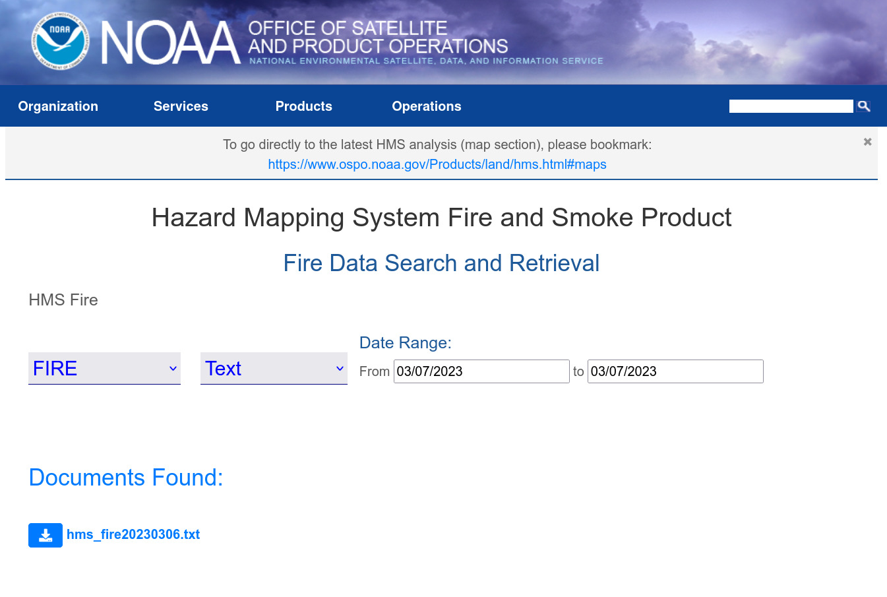
Let’s read a few lines from the file:
df = pd.read_csv('data/hms_fire20230306.txt')df.shape(24485, 8)df.sample(10)| Lon | Lat | YearDay | Time | Satellite | Method | Ecosystem | FRP | |
|---|---|---|---|---|---|---|---|---|
| 17651 | -90.261902 | 19.713993 | 2023065 | 2201 | GOES-EAST | FDC | 34 | 87.415 |
| 2835 | -78.968910 | 21.834669 | 2023065 | 1746 | GOES-EAST | FDC | 93 | -999.000 |
| 5250 | -76.867294 | 18.226049 | 2023065 | 1840 | NOAA 20 | VIIRS | 24 | 5.654 |
| 22280 | -98.832497 | 19.443575 | 2023066 | 46 | GOES-EAST | FDC | 41 | 78.344 |
| 794 | -100.092950 | 24.831312 | 2023065 | 910 | NOAA 20 | VIIRS | 47 | 1.258 |
| 19110 | -71.630478 | 19.319798 | 2023065 | 2231 | GOES-EAST | FDC | 91 | 32.565 |
| 23370 | -83.569122 | 22.277122 | 2023066 | 216 | GOES-EAST | FDC | 93 | 220.716 |
| 1933 | -98.455124 | 36.903248 | 2023065 | 1650 | GOES-EAST | FDC | 31 | -999.000 |
| 1883 | -98.248184 | 26.366270 | 2023065 | 1646 | GOES-EAST | FDC | 94 | -999.000 |
| 3390 | -81.141960 | 22.947918 | 2023065 | 1758 | SUOMI NPP | VIIRS | 93 | 6.468 |
As we can see, the data contains the coordinates of the location where 🔥 detected, date and time, the 🛰️ that took the picture among other data. Especially interesting is the FRP as that indicates the intensity of the activity. The higher the FRP, the intense the burning.
Fire radiative power (FRP) is a measure of heat output from a fire and is related to how quickly fuel is being consumed. It is directly related to the rate of biomass consumption during the active (flaming/smoldering) phase of a fire. Look here for more info.
Let’s look from which 🛰️ are we getting the data from:
df.columnsIndex([' Lon', ' Lat', ' YearDay', ' Time', ' Satellite',
' Method', ' Ecosystem', ' FRP'],
dtype='object')# strip extra spaces
df.columns = df.columns.map(str.strip)df.Satellite.value_counts() GOES-EAST 17871
SUOMI NPP 3372
NOAA 20 3222
GOES-WEST 20
Name: Satellite, dtype: int64df.Satellite.value_counts(normalize=True) GOES-EAST 0.729875
SUOMI NPP 0.137717
NOAA 20 0.131591
GOES-WEST 0.000817
Name: Satellite, dtype: float64Almost 75% of the data is from one source.
Let’s now look at the distribution of FRP
import seaborn as snssns.kdeplot(df.FRP);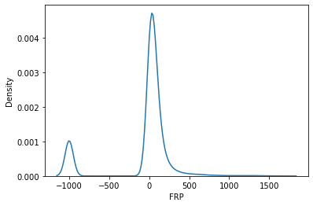
Most of the 🔥 places detected are relatively less intenseful. Let’s now look at their geographical distribution.
First, as usual, select a basemap from the ones we downloaded in the last post (look under XYZ Tiles in browser area). Ideally you would want to know the topography of the land in this case. So I went with Google Terrain Hybrid.
Now, unlike shapefiles, we can’t simply drag a text file to the canvas. Instead, goto Layer-> Add Layer -> Add Delimited Text Layer. Fill it with the information as shown.
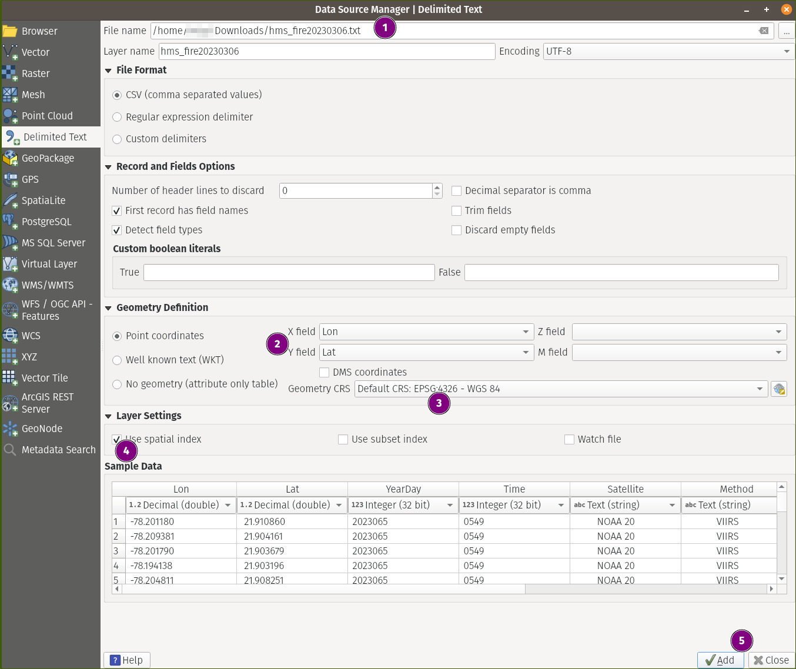
This would stack the file over our basemap. Now this is already good… but we are still not making use of the FRP information we have. Since it’s numerical data, let’s try to colorize the data based on this. We already know the higher the FRP, the intense the 🔥 is. As these are continuous values, let’s bin them into discrete classes based on the histrogram we saw above.
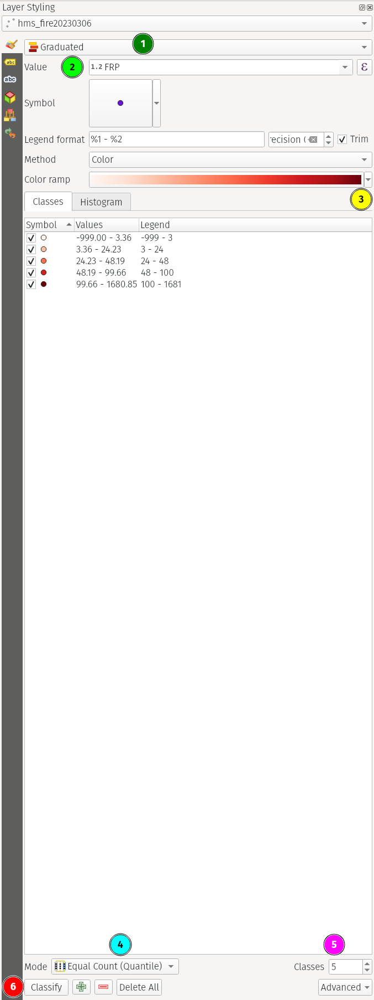
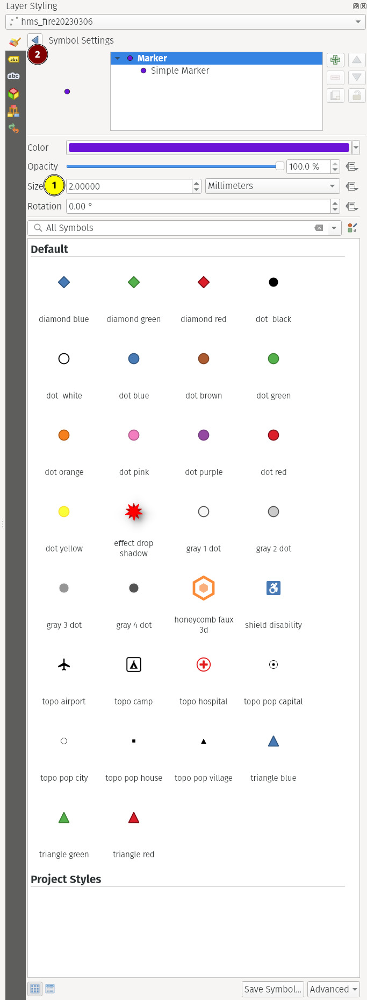
Tip
The toolbar in fig. 3(b) can be accessed by clicking the 🟣 circle (Symbol section) in fig. 3(a). Change the values as you please.
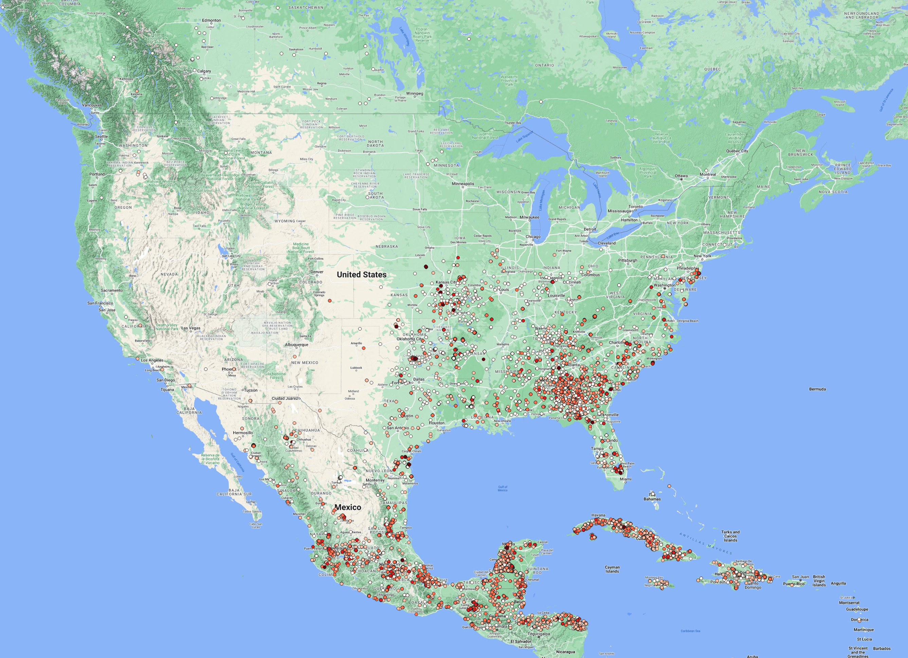
We clearly see that most of the activity is exclusively detected in the SE part of North America with most parts of Cuba, SE Mexico & NW of Florida.
Now that we know the intensity of the fires, we can also actually know from which satellite a given data point has originated. To do that, we need to label each data point with the corresponding value in the Satellite field as we have seen earlier.
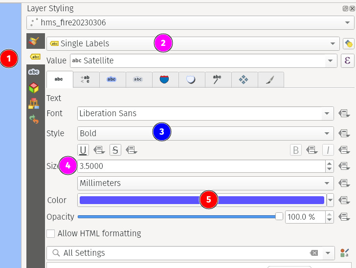
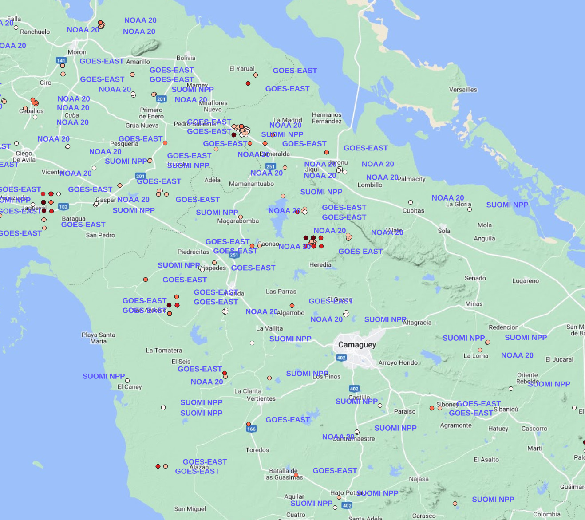
You may notice that the same coordinates have the same label repeated multiple times. That got me interested. So I digged in. I suspected that it could be because of duplicate entries of the coordinates.
df.shape, df.drop_duplicates().shape((24485, 8), (24485, 8))df.drop_duplicates(['Lat', 'Lon']).shape(9752, 8)Indeed it was. But only the coordinates are duplicated but not all the fields.
df[['Lat', 'Lon']].value_counts().head()Lat Lon
16.311804 -92.219566 156
19.440290 -89.355492 149
19.479744 -89.319229 131
19.153973 -90.197701 120
19.499657 -89.321320 116
dtype: int64Let’s take one example and see what’s changing.
df.query('Lon==-92.219566 and Lat==16.311804')| Lon | Lat | YearDay | Time | Satellite | Method | Ecosystem | FRP | |
|---|---|---|---|---|---|---|---|---|
| 2087 | -92.219566 | 16.311804 | 2023065 | 1700 | GOES-EAST | FDC | 93 | 22.154 |
| 2393 | -92.219566 | 16.311804 | 2023065 | 1721 | GOES-EAST | FDC | 93 | 33.626 |
| 2520 | -92.219566 | 16.311804 | 2023065 | 1730 | GOES-EAST | FDC | 93 | 32.808 |
| 2738 | -92.219566 | 16.311804 | 2023065 | 1741 | GOES-EAST | FDC | 93 | 31.866 |
| 4156 | -92.219566 | 16.311804 | 2023065 | 1800 | GOES-EAST | FDC | 93 | 53.364 |
| ... | ... | ... | ... | ... | ... | ... | ... | ... |
| 23682 | -92.219566 | 16.311804 | 2023066 | 251 | GOES-EAST | FDC | 93 | 25.892 |
| 23704 | -92.219566 | 16.311804 | 2023066 | 256 | GOES-EAST | FDC | 93 | 31.707 |
| 23759 | -92.219566 | 16.311804 | 2023066 | 301 | GOES-EAST | FDC | 93 | 32.109 |
| 23786 | -92.219566 | 16.311804 | 2023066 | 306 | GOES-EAST | FDC | 93 | 29.846 |
| 24006 | -92.219566 | 16.311804 | 2023066 | 336 | GOES-EAST | FDC | 93 | 29.942 |
156 rows × 8 columns
df.query('Lon==-92.219566 and Lat==16.311804').Satellite.unique()array([' GOES-EAST'], dtype=object)Interesting! We now have different values for FRP over a single coordinate but at different times.
(df
.query('Lon==-92.219566 and Lat==16.311804') # take one location as an example
.sort_values(['YearDay', 'Time']) # sort it by time
.query('FRP > 0') # filter out -ve values (incorrect data?)
.reset_index(drop=True) # drop the index values
.FRP
.plot(title='FRP of a single location over time', xlabel='Time', ylabel='FRP'));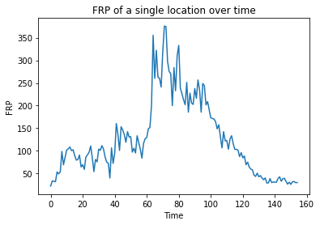
Nice! We now see how the FRP has evolved over time… it looks as if the 🔥 appears to have begun, spread, and intensified before eventually extinguishing or subsiding.
filtering a text file
Coming back to our satellite names, we can filter only for the data coming from a single satellite by right clicking on the hms_fire20230306 layer, selecting filter and later entering the query like so:
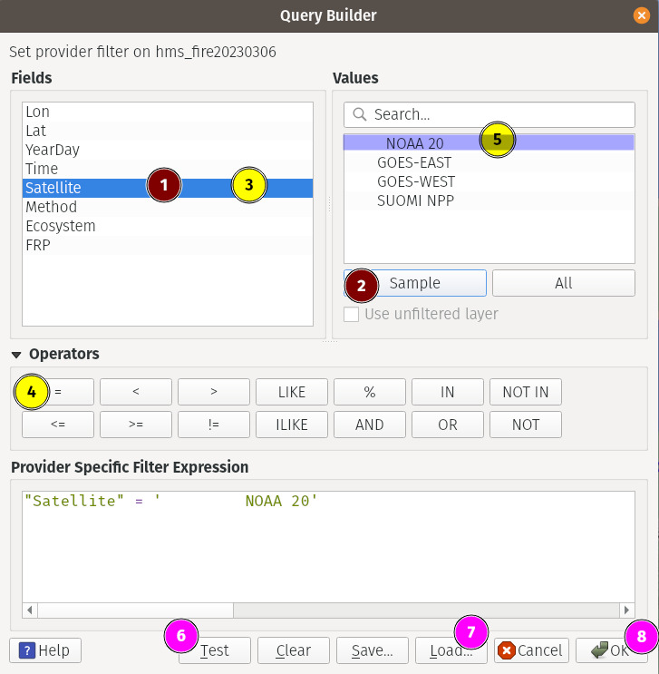
1- selects the field we want to filter2- gets a few sample values from that field3- double click on the field to enter it into the query box below. Alternatively you can type it as well.4, 5- double click/type6- clickingTestgives us how many rows that satisfy the condition. HitOK7- ignore (don’t click it)8- clickOKto finalize the filtered data
If you now look at the later, we only see the datapoints from the satellite we filtered.
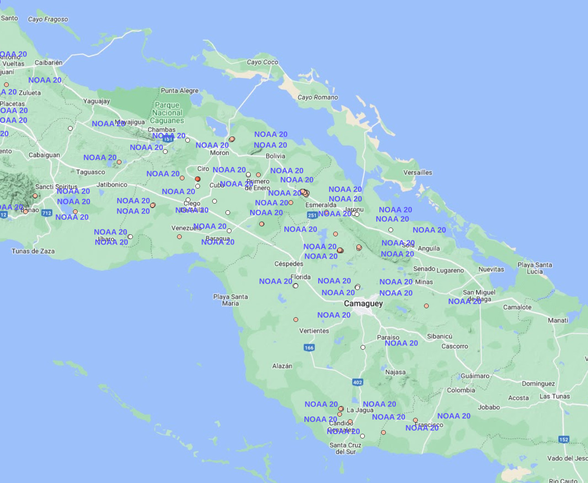
conclusion
Now we have seen how to load text files and filtering for our desired data. You can also load Well Known Text (WKT) and other text files in the same manner. Just make sure to select the appropriate radio button while loading them.
Add WFS Connection
The Web Feature Service (WFS) protocol enables users to access and query feature data over the internet, without having to download and store the data locally. This can be particularly useful when working with large datasets or when collaborating with other users who may have different data sources or access privileges. WFS allows users to view and analyze feature data from multiple sources, combine data from different sources, and perform spatial and attribute queries on the data. This can help users to make more informed decisions and gain insights from the data that might not be apparent from a single dataset.
There are lot of publicly available WFS servers online (just google) including from universities, government organizations etc. geoseer is one such service which provides links to those servers.
For our purposes, we shall take a look at one WFS server that offers water level information in Germany. So head over here and copy the WFS URL.
As this is a data layer, as usual, we will add a basemap layer or two. In this case, I went with CartoDB Positron.
To add the WFS connection, goto WFS/OGC API - Features in the browser area and click New Connection.
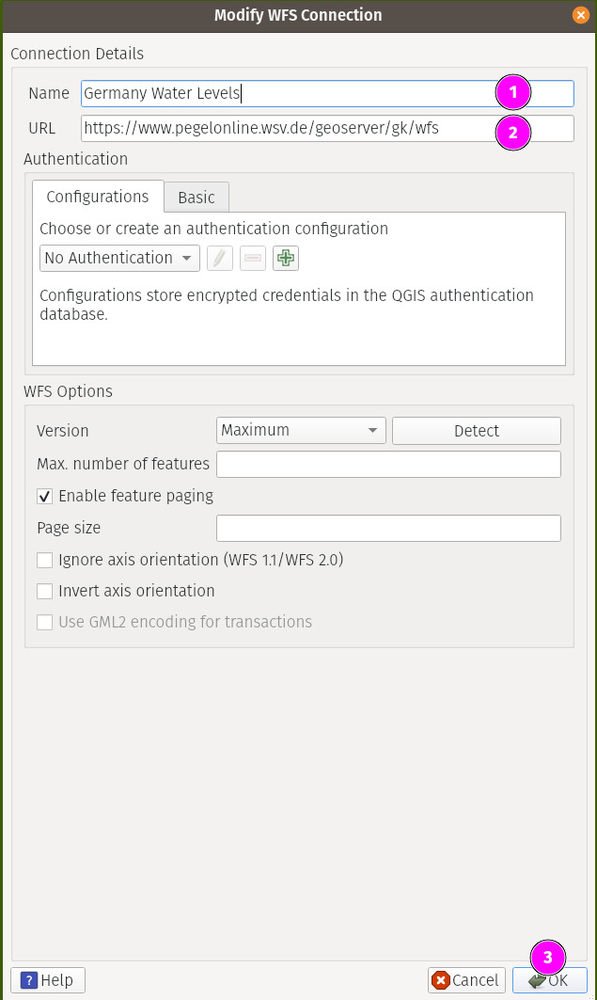
Once you have done that above, you will notice a new connection appearing under that section. Clicking on it will reveal the layer that you can now simply drag & drop to the canvas.
We can right click on the added layer in the Layers section and select Open Attribute Table to reveal all its data in plaintext form. We notice that there’s a field named Value that shows the depth of the water level. Now just like in our last use case, you can now use this field to bin its values to get the following map.
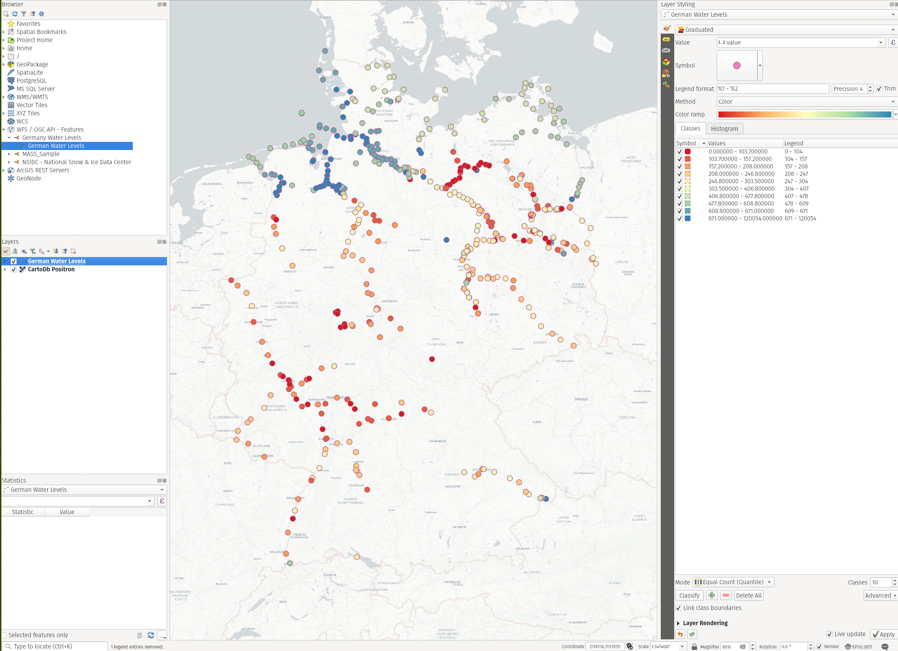
It shows that the levels are higher in North than in the South (most likely being it closer to the Sea) but it’s troubling to see some major cities suffering with severe lack of ground water.
Conclusion
Just like WFS, you can also add WMS/WCS services much the same way to carry out analysis without downloading data onto your disk.
Final Words
In this post, we have seen how to use different types of data sources and possibly lighten our data resources on disk to perform our analysis and collaborate with others online when needed. We also performed query filtering to visualize only the data we need and how to do it in a meaningful way.
In the next post, we will make a bit more use of Python & QGIS scripting to write a complex processing pipeline.
Thanks for reading.
Auf wiedersehen 👋